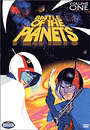

Anime released to the U.S in the 70's were not as impactful as the 60's but there were still a couple of successful shows that would pave the way for 80's. Most of the shows that gained popularity in the west would release a few years after the original Japanese releases. Released in 1979 (1974 in Japan), Star Blazers (Space Battleship Yamato) was one of the first and most popular shows to reach the west. It was the first anime translated in english that followed an overarching narrative which required the audience to watch its episodes in order which would set an example for future plot driven anime in the west. It also did not censor as much content as its predecessors leading to the show being more mature than the likes of Astro Boy and Kimba the White Lion.
The second popular series was known as Battle of the Planets (Science Ninja Team Gatchaman). This series was the most popular anime of the 70's and was airing on 100 networks in 1979. 85 out of the 105 original Japanese episodes were aired due to censorship for a more western audience. The series would later be rebooted during the 80's as G-Force but it was not well received by the audience of the original series. Because of the release and popularity of Star Wars in the 70's both Battle of the Planets and Star Blazers gained a boost in popularity because of their sci-fi settings. One other popular series would release in 1979 named Lupin III (Lupin the Third). However this series would not reach the popularity of the previously mentioned titles and would remain a cult title until a more modern era.
